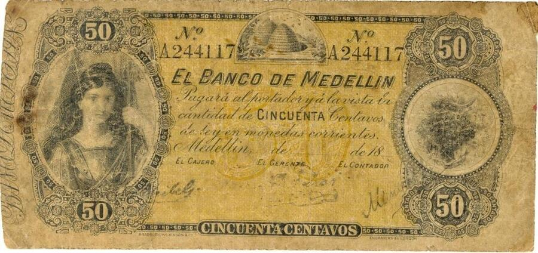
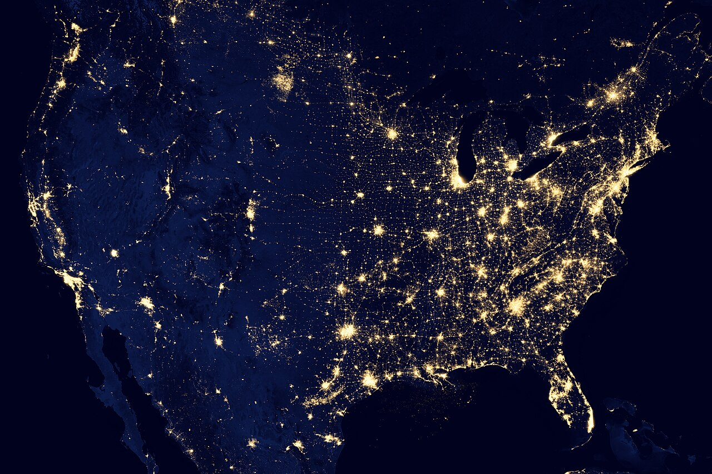
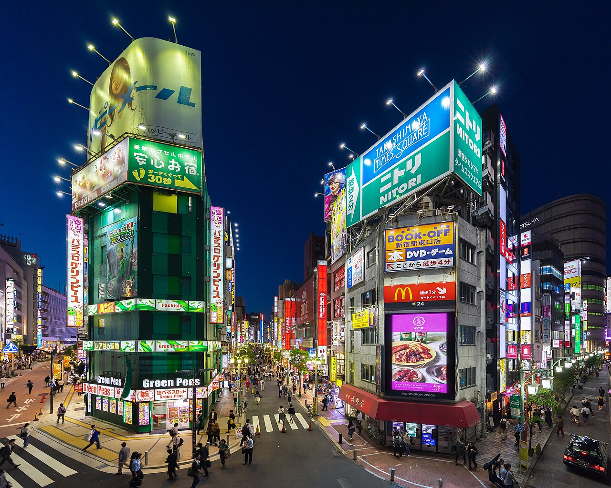
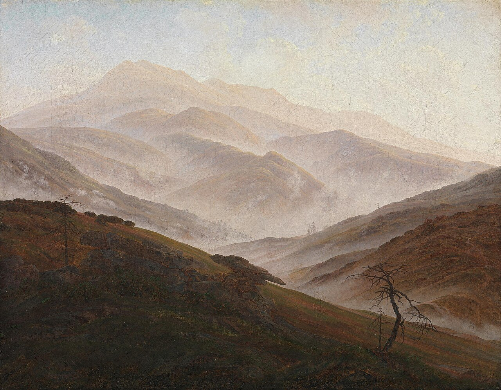
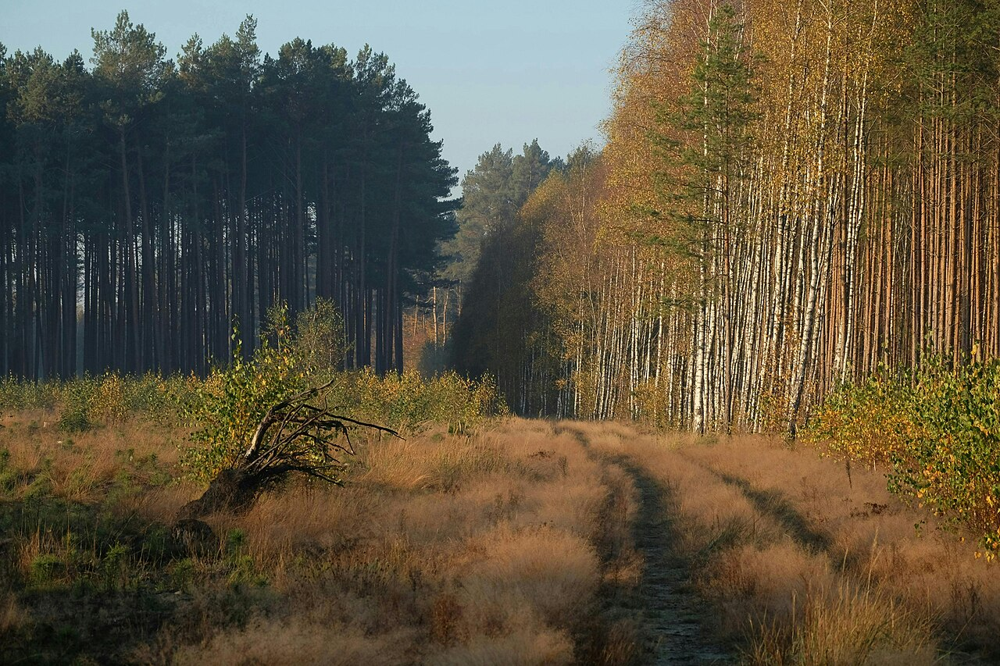
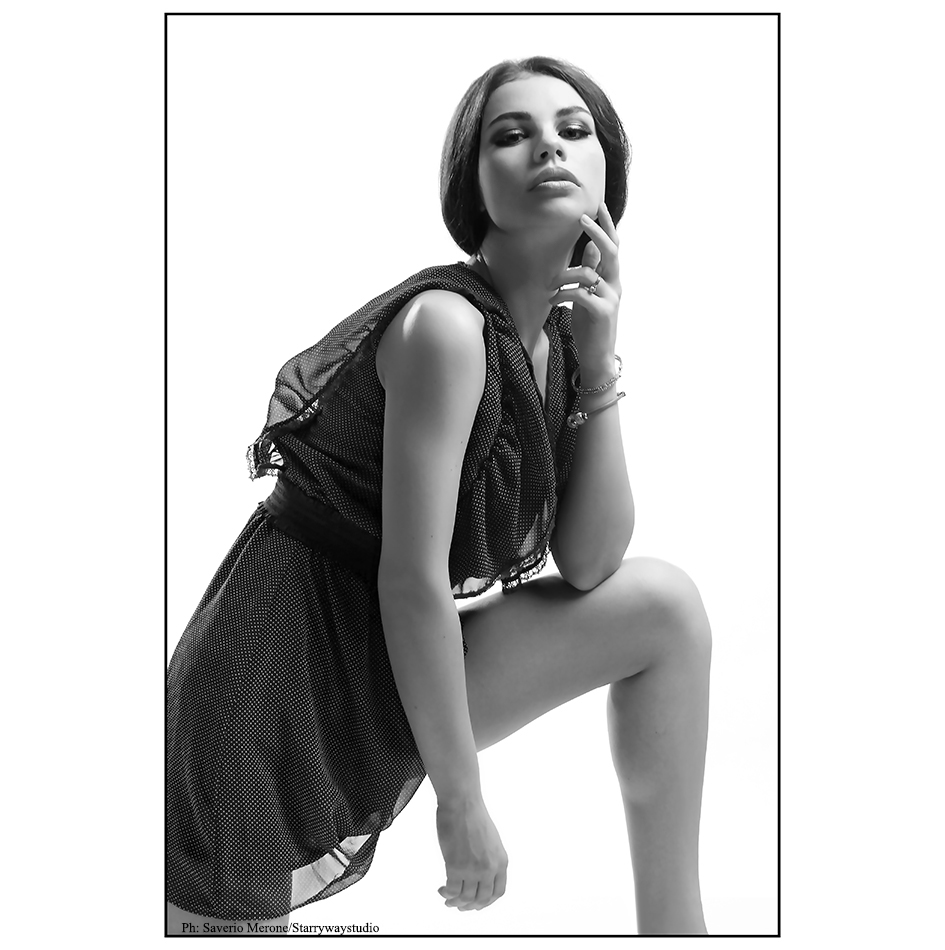

Trabajo
Fotografía










Sobre mí
Fran Cisterne — Filmmaker y Director Creativo.
Trabajo en narrativa, corporativo, documental, publicidad y comercial desde 2018. Mi enfoque se centra en transformar ideas, conceptos y marcas en piezas audiovisuales con una identidad visual sólida y cinematográfica. Busco que cada proyecto tenga un lenguaje propio, cuidando la dirección, la fotografía, el movimiento y el ritmo hasta el último detalle. Entiendo el audiovisual como una herramienta para comunicar, emocionar y construir percepción de marca. Trabajo desde la idea hasta la pieza final, combinando creatividad y técnica para crear imágenes que no solo destaquen, sino que permanezcan.
Nací en Cehegín, Murcia, y desde pequeño siempre he sentido una especial curiosidad por el mundo audiovisual y la forma de contar historias. Tengo 26 años y desde 2018 he ido construyendo mi camino profesional detrás de una cámara, convirtiendo una afición en mi forma de vida.
Disponible para narrativa, corporativo, documental, publicidad y comercial.